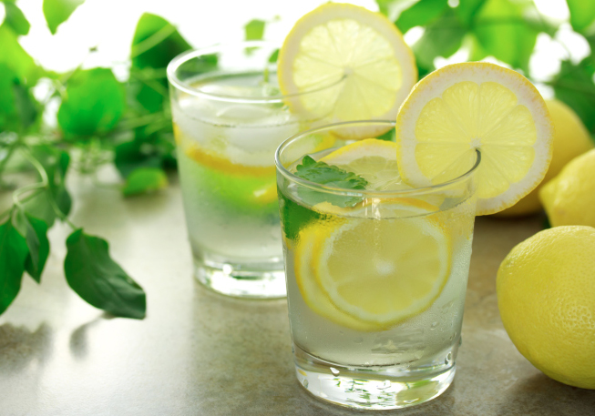
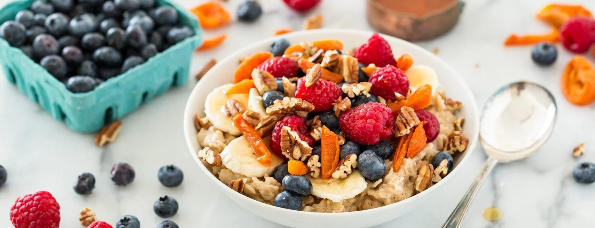
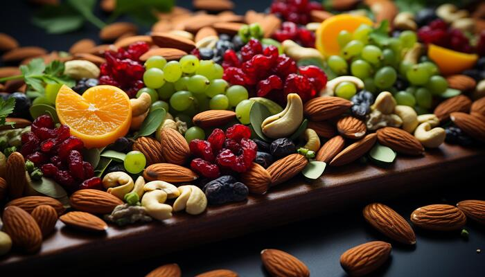
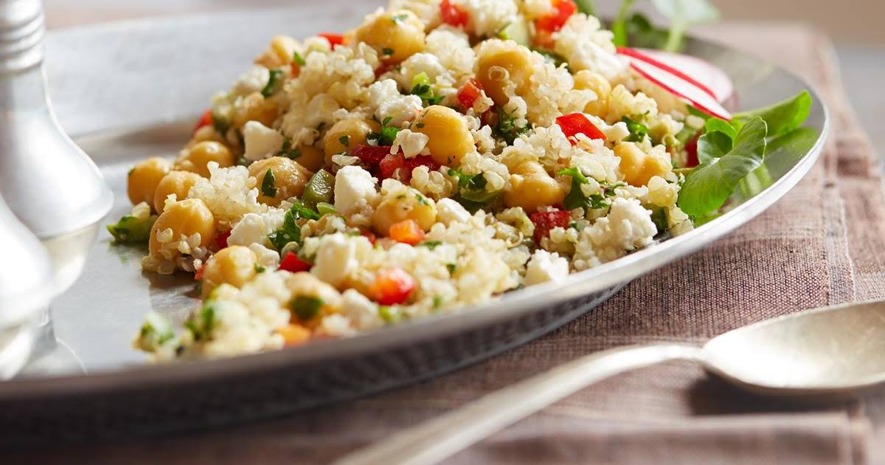
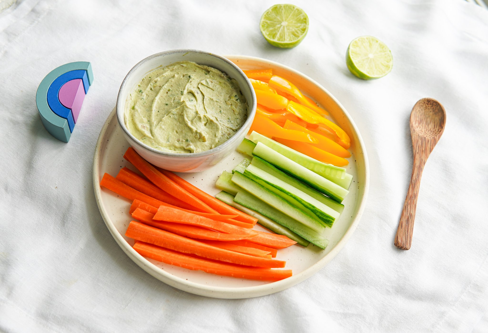
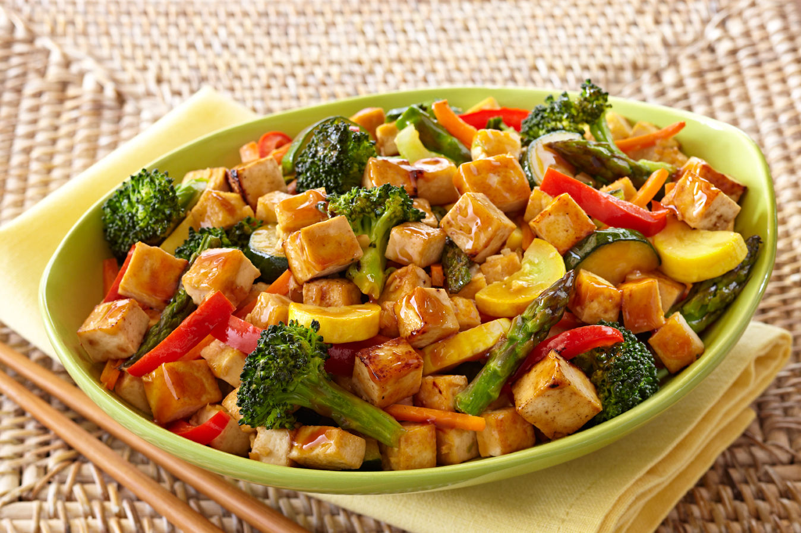
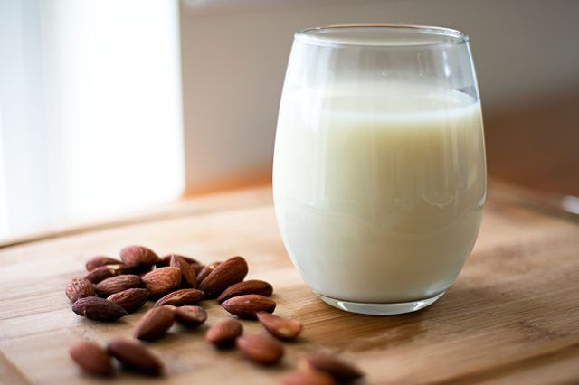

Vegetarian Meal Plan for Maintaining a Slim Body
Morning Routine (6:30 AM – 7:00 AM)

- 1 glass of warm water with half a lemon squeezed in
- Optional: Add 1 tsp honey
Breakfast (7:30 AM – 8:00 AM)

- 1/2 cup oats cooked in almond milk or low-fat milk
- Toppings: 1 tbsp chia seeds, 1 tbsp flax seeds, mixed fruits
- 1 cup of green tea
Mid-Morning Snack (10:30 AM)

- 1 apple or a handful of almonds (10-12 pieces) or walnuts (5-6 pieces)
- 1 glass of water (can add cucumber or mint for flavor)
Lunch (1:00 PM – 1:30 PM)

- 1 cup cooked quinoa with mixed vegetables and chickpeas
- 2 tbsp hummus on the side
- 1 glass of low-fat buttermilk
Evening Snack (4:00 PM)

- Carrot, cucumber, and bell pepper sticks
- Greek yogurt dip with herbs
- 1 cup of herbal tea or black coffee (without sugar)
Dinner (7:00 PM – 7:30 PM)

- Vegetable stir fry with tofu
- 1/2 cup of brown rice or quinoa
- Mixed leaf salad
Post-Dinner (8:30 PM)

- 1 cup of chamomile tea or warm almond milk with a pinch of turmeric
Key Points:
- Hydration: Drink 8–10 glasses of water throughout the day
- Portion Control: Stick to smaller portions to avoid overeating
- Balanced Macronutrients: Ensure a good mix of protein, healthy fats, and complex carbs at each meal
- Fiber-Rich Foods: Vegetables, fruits, and whole grains will keep you full longer and improve digestion